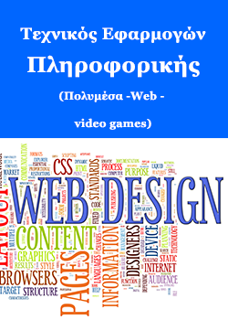

4 Ιουλίου 2022
To «Στέλεχος Ψηφιακού Μάρκετινγκ στο Ηλεκτρονικό Εμπόριο» αποτελεί ένα σχετικά νέο και δυναμικό τεχνοοικονομικό επάγγελμα αιχμής το οποίο σχετίζεται με την Ψηφιακή Επιχειρηματικότητα, το Ψηφιακό Μάρκετινγκ και τον Ψηφιακό Μετασχηματισμό των επιχειρήσεων με στόχο την υιοθέτηση και βέλτιστη εφαρμογή αυτών Περισσότερα...
4 Απριλίου 2021
Επαγγελματικό περίγραμμα ειδικότηταςH αξιοποίηση της τεχνολογίας και πιο συγκεκριμένα αυτής που έχει σχέση με τις διαδραστικές εφαρμογές και τις τεχνολογίες διαδικτύου προσφέρει πολλές ευκαιρίες αποκατάστασης των διπλωματούχων, οι οποίοι μπορούν να εργαστούν στο δημόσιο ή στον ιδιωτικό τομέα στα εξής αντικείμενα :– Εγκατάσταση, ρύθμιση, Περισσότερα...